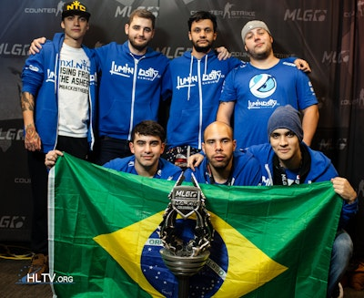

Título 1: MLG Columbus 2016
MLG Counter-Strike: Global Offensive Major Championship: Columbus, também conhecido como MLG Columbus 2016, foi o oitavo Campeonato Major de Counter-Strike: Global Offensive (CS:GO) realizado pela Major League Gaming (MLG) de 29 de março a 3 de abril de 2016, na Nationwide Arena em Columbus, Ohio, Estados Unidos. Foi o primeiro Major de CS:GO na América do Norte e o primeiro realizado pela Major League Gaming, que anteriormente realizou um torneio de exibição de CS:GO no X Games Aspen de 2015. Também foi o primeiro Major de CS:GO em que a ESL ou a DreamHack não foram as organizadoras. Em 23 de fevereiro de 2016, foi anunciado que o MLG Columbus 2016 seria o primeiro torneio de Counter-Strike com um prêmio total de US$ 1.000.000.